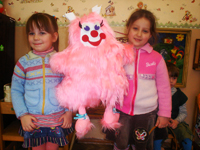

НОВОСТИ
Всеновости 03.12.10 Появился новый образ Хорплоши. За понравившийся Вам образ Вы можете проголосовать на странице " Поиск образа".Подробнее...
|
Итожка от Хорплошки
«Итожка от Хорплошки» В детском саду г. Рязани № 10 психолог Солдатова Людмила Анатольевна после проведения представления провела и внедрила следующий вариант работы с персонажем. Родители детей из младшей группы сшили объемную куклу Хорплошу. Посмотрите на фото. Хорплоша с одной стороны, покрыта розовой шерсткой, шерстка аккуратная и гладкая.С другой - синяя и некрасивая, на ней нашиты полоски - липучки, на мордочке унылый ротик, и косой глазик. Но Хорплоша способна меняться! По мере выполнения хороших поступков, дети прикрепляют на липучку красивый ротик, носик и кусочки гладкой розовой ткани, закрывая все синее и непривлекательное. Таким образом, когда ребенок наблюдает, что каждый даже маленький добрый поступок добавляет Хорплоше красивую гладкую шерстку, меняет ее суровое выражение лица на улыбку, он понимает, что это именно его поступки, действительно, преображают внешний вид Хорплоши, соответственно меняют ее настроение и поведение. Изменения Хорплоши в лучшую сторону, ее новая привлекательная внешность, вызывают у ребенка желание делать добрые поступки. Хорплоша, опять же, создает у детей образное представление о том, что каждый их поступок значим.
Я предлагаю в семье проводить игру – беседу «Итожка от Хорплошки» . «Итожка» от слова итоги. У Хорплоши должен быть свой домик. И если Вы заранее запланировали в конце дня подвести итог поступкам ребенка при помощи перевоплощения Хорплоши, то пусть в течение дня Хорплоша сидит в своем домике, чтобы не смущала домочадцев двухшёрстным видом. А уже в конце дня Вы усаживаетесь вместе с малышом рядом с домиком Хорплоши. Мама - Посмотри, Малыш, на Хорплошу. Она пока еще двухшерстная, и какой она будет , красивой и доброй, или недоброй и неаккуратной , зависит от твоих поступков, которые ты совершал сегодня за день. Давай, вспомним все поступки и посмотрим, как ты изменил внешний вид Хорплоши. Начнем с самого утра. (Пусть малыш сам вспоминает и оценивает свои поступки, меняя внешний вид Хорплоши, приклеивая розовые кусочки меха.) Например: Малыш - Я проснулся и сам заправил свою постель. Мама -Молодец, Малыш! Хорплоша тоже проснулась вместе с тобой, посмотрела в окошко своего домика, увидела, что ты убираешь свою постель, и заулыбалась. Давай, заменим унылый ротик Хорплоши, на веселый. Посмотри, как ты развеселил Хорплошу! И глазки у нее веселые стали. Малыш -Потом я сказал всем «Доброе утро!» Мама -Да, отлично, будем менять шерстку Хорплоши. Хорплоша обрадовалась, и у нее начала меняться шерстка, она стала гладкой ровной и красивой, потому что она очень любит вежливые слова. Малыш -А потом я умылся и почистил зубы. Мама Хорплошу очень радуют аккуратные и чистоплотные ребята, поэтому красивой шерстки у Хорплоши стало еще больше. (прилипаем еще кусочек красивой шерстки) Я не капризничал, сел кушать кашу со всеми вместе и пожелал «Приятного аппетита!» Мама Хорплоша любит, когда дети не капризничают и когда они послушны и вежливы. И если ты не капризничаешь, и помнишь о вежливых словах, она очень счастлива, давай добавим еще немного красивой шерстки Хорплоши. Малыш А потом я вышел из-за стола, сказал «Спасибо» за вкусный завтрак и помог помыть посуду. У Хорплоши, с каждым твоим поступком, настроение становится все лучше и лучше, и у нее красивой шерстки становится все больше и больше, вот мы добавим еще добавим еще кусочек шерстки, потому что она обрадовалась тому, что ты помогал мыть посуду. Шерстка начинает сиять и лосниться. Хорплоша радуется тому, что ты аккуратен и организован, и ей хочется скорее восстановить свою красивую шерстку и аккуратно ухаживать за ней. Давай продолжим менять Хорплоше шерстку. Ну, так что же ты делал дальше? И так далее, пока Хорплоша вся не будет покрыта красивой розовой шерсткой. Таким образом, если Вы будете ежедневно проводить игру-беседу «Игожка от Хорплошки» это будет приучать ребенка соблюдать режим дня, прививать аккуратность, воспитывать вежливость и уважение, и контролировать свой каждый поступок, помня, что он меняет внешний вид и настроение Хорплоши.
Вот так, дорогие мои, или примерно так Вы можете в конце дня подводить итоги поступков и поведения Вашего малыша. Если поступков малыша за день оказалось больше, чем розовых кусочков шерстки, то можно продолжать так. Посмотри Малыш, твои поступки изменили внешний вид Хорплоши, сделали ее красивой, аккуратной и доброй и конечно же у нее изменилось настроение, и она теперь тоже будет совершать только добрые поступки. И от этого добра меняется все вокруг. Давай продолжим менять домик Хорплоши, и все вокруг него. Как вариант можно изготовить Хорплошу всю полностью синего цвета, и тогда Малыш будет менять ее шерстку полностью. Страниц: 1
|
Активных опросов на данный момент нет.

Поиск Подписка на новости 

|
{kind=link}
© 2006-2009